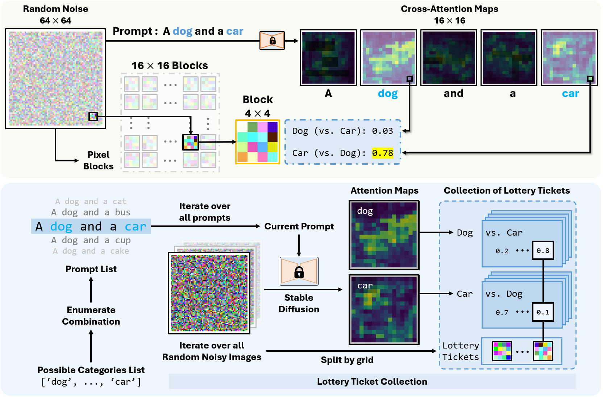
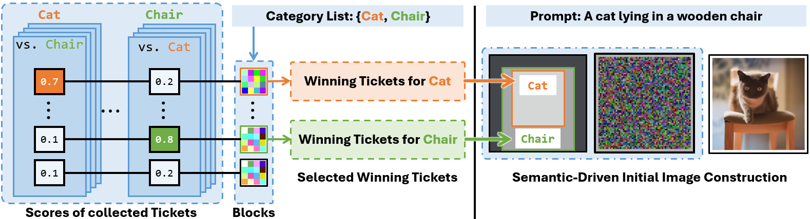

Text-to-image diffusion models allow users control over the content of generated images. Still, text-to-image generation occasionally leads to generation failure requiring users to generate dozens of images under the same text prompt before they obtain a satisfying result.
We formulate the lottery ticket hypothesis in denoising: randomly initialized Gaussian noise images contain special pixel blocks (winning tickets) that naturally tend to be denoised into specific content independently. The generation failure in standard text-to-image synthesis is caused by the gap between optimal and actual spatial distribution of winning tickets in initial noisy images. To this end, we implement semantic-driven initial image construction creating initial noise from known winning tickets for each concept mentioned in the prompt.
We conduct a series of experiments that verify the properties of winning tickets and demonstrate their generalizability across images and prompts. Our results show that aggregating winning tickets into the initial noise image effectively induce the model to generate the specified object at the corresponding location.
In this paper, we unveil the existence of migratable pixel blocks in the initial random Gaussian noise that are independently associated with certain concepts. we term our findings in this paper as the Lottery Ticket Hypothesis in Denoising:
Randomly-initialized noise images contain pixel blocks with initial values that allow them to be used to generate specific concepts.
Properties of the winning tickets:
With a given list of possible categories, our method collects pixel blocks (Lottery Tickets without knowing if they won) along with their category-wise similarity from a huge amount of random noisy images.
For a prompt and specified locations of each object given by the user, we construct the corresponding area in the initial image by the winning tickets for the corresponding concept, as illustrated in the following figure. We randomly select the number of pixel blocks needed to construct the specified region from the filtered winning tickets and randomly fill the corresponding region with these selected winning tickets. We refer to this process as SEMantic-driven Initialization (SemI) as we construct the initial noise using winning tickets with recognized semantic information. After that, we use the pre-trained diffusion model to denoise our constructed initial noise normally.
Constructing initial noise solely through the utilization of winning tickets achieves a control effectiveness comparable to existing layout-to-image methods, and incorporating winning tickets alongside them significantly enhances their performance. The successful generation and the ability to exert control through utilizing winning tickets are enlightening for three significant reasons as follows:
This work is an extension of Guided Image Synthesis via Initial Image Editing in Diffusion Model [ACM MM 2023], which is the first work to introduce the concept of initial noise editing.
@article{mao2024theLottery,
author = {Jiafeng Mao, Xueting Wang and Kiyoharu Aizawa},
title = {The Lottery Ticket Hypothesis in Denoising: Towards Semantic-Driven Initialization},
journal = {ECCV},
year = {2024},
}